Dzień dobry.
Mam do odstąpienia leasing na mojego Explorera. Jestem pierwszym właścicielem auta (nie licząc dealera).
2022, aczkolwiek zakupiony w 2023 (wszak rokiem i kolorem się nie jeździ). Europejska wersja, PHEV (457 KM/825 Nm), wyposażenie: wszystko co fabryka dawała (a dawała dużo), plus: hak, opony zimowe, ceramika, mod na pełny ekran, adapter na bezprzewodowe AA, oryginalne dywaniki gumowe do trzech rzędów. Wykupiona gwarancja Ford 12. Samochód garażowany, bezwypadkowy, bezkolizyjny, nie przerobiony z kontenera na śmieci - można atakować z czujnikami grubości lakieru i oczywiście możemy jechać na ścieżkę zdrowia do serwisu Forda (na koszt kupującego).
Krótko o Explorerze: świetnie wyposażony, potężny i pakowny samochód.
Cesja leasingu: 100kpln odstępnego, coś tam ponad 180kpn do spłaty - kwoty brutto. Generalnie całkiem niezłą ofertę na leasing wtedy udało mi się utrafić.
Jako, że w życiu miałem okazję sprzedawać inne samochody, którymi jeździłem i niejeden potencjalny kupiec opuścił me włości zasmucony, że, mimo oczywistych grzechów, nie opuściłem ceny do 0 PLN, czuję się w obowiązku poinformować tych, którzy planują przyjechać uzbrojeni w wujków, Marianów-mechaników (zbieżność imion przypadkowa), by udowodnić mi, że jednak samochód dachował z Mount Everestu i aktywnie zbijać cenę:
- ten samochód nie jest fabrycznie nowy
- tak, jeździłem tym samochodem
- o zgrozo, woziłem nim dzieci
o powyższych przewinach wiem, jestem ich świadomy i lojalnie o nich uprzedzam. Jestem pewien, że gdzieś na świecie istnieją egzemplarze, którymi dziadek jeździł tylko do kościoła i odda za dopłatą, niemniej jednak ja nie oddaję za dopłatą więc nie marnujmy swojego czasu :-)
Zainteresowanych zapraszam do kontaktu - wszelkich dodatkowych informacji udzielę telefonicznie.
Powyższe nie jest ogłoszeniem w rozumieniu kodeksu prawa.
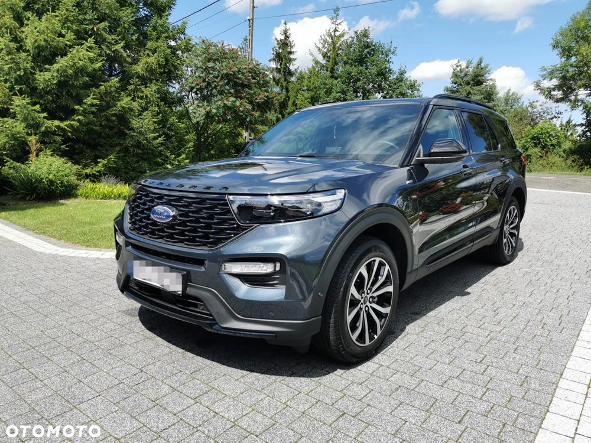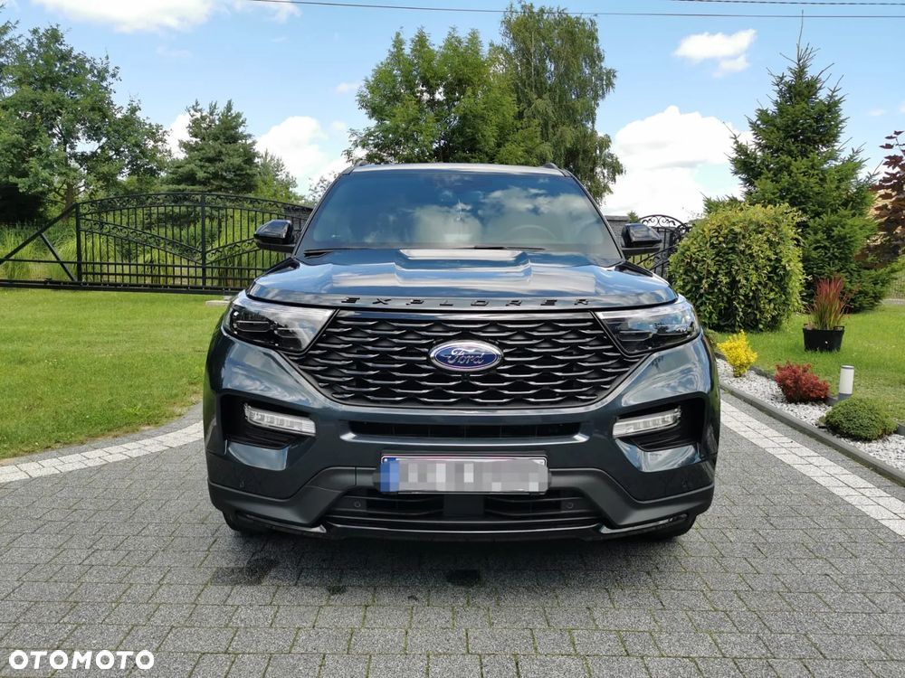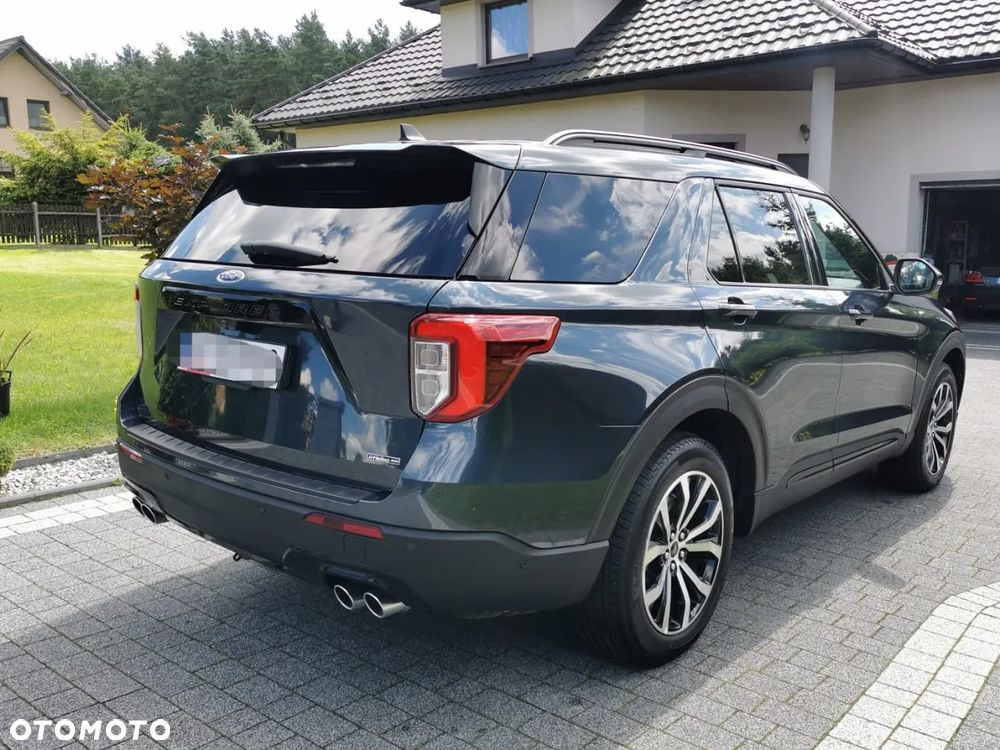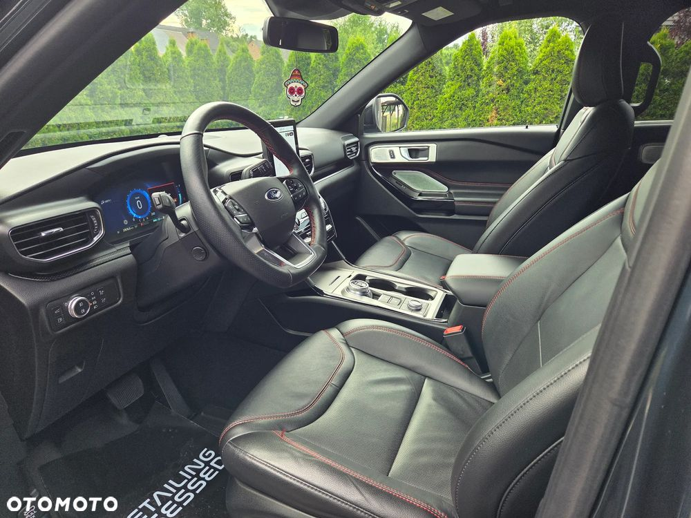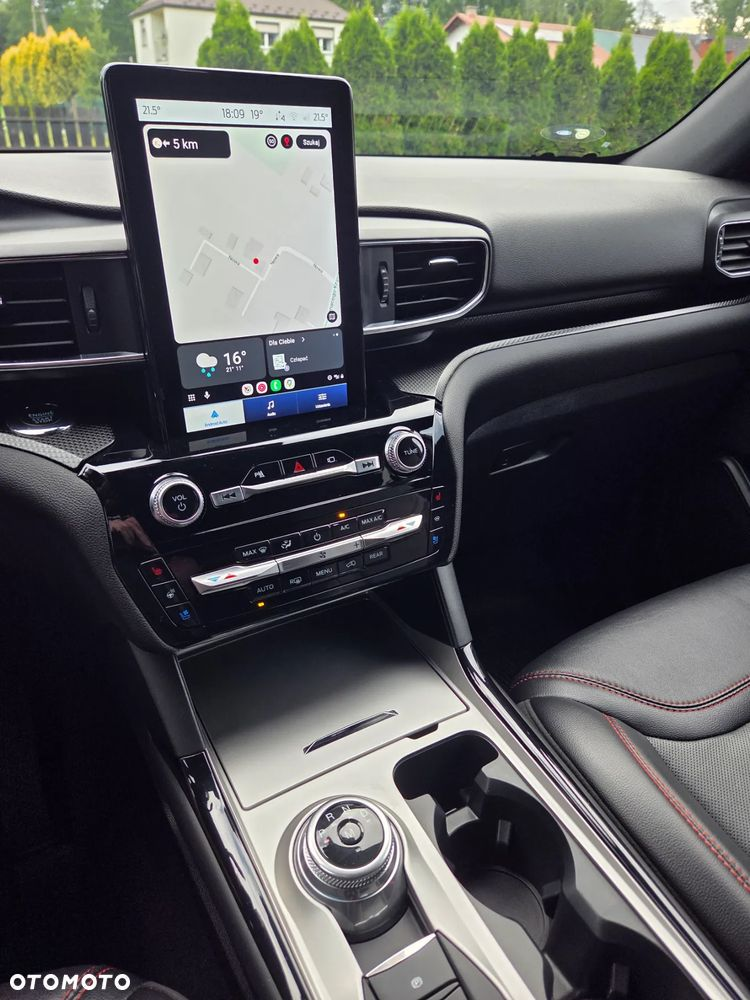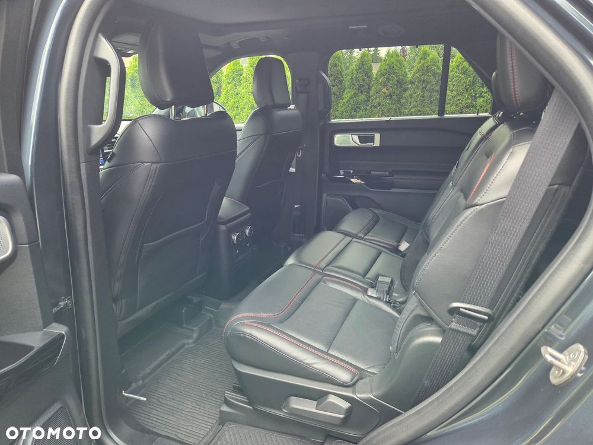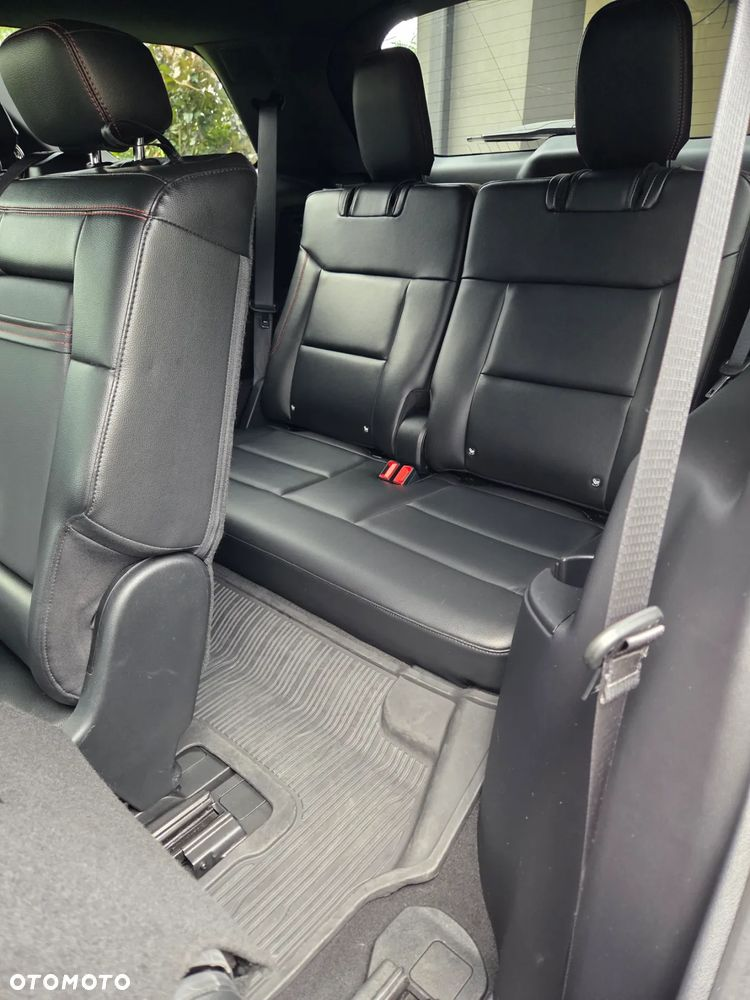 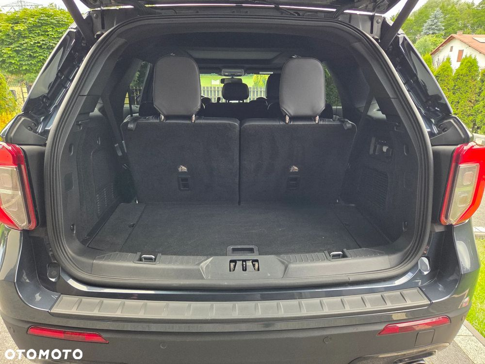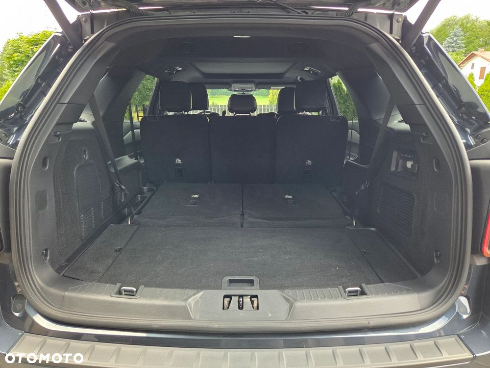
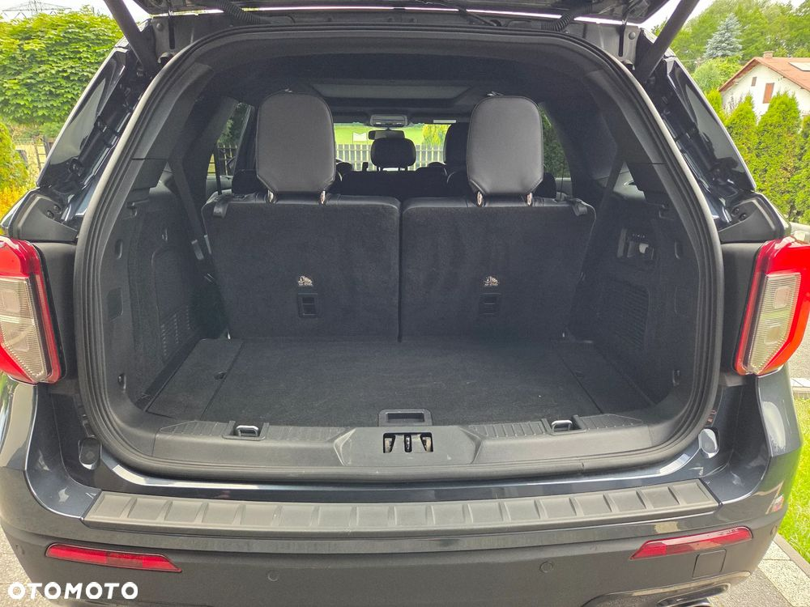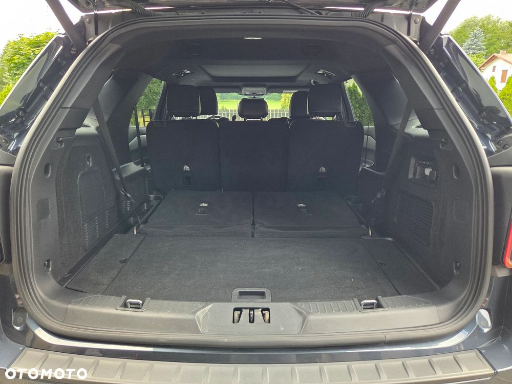